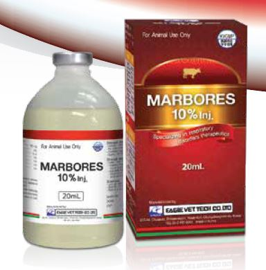

Composition
Each ml contains:
Morbofloxacin 100 mg
Gluconolactone q.s.
Cresol q.s.
Monothioglycerol q.s.
Disodium Edetate q.s.
Monoethanolamine q.s.
Water for injection q.s.
Indications
Cattle: For the treatment of respiratory disease and acute mastitis caused by susceptible bacteria to marbofloxacin-Pasteurella pneumonia(Pasteurella multocida, Pasteurella haemolytica), Mycoplasma pneumonia (Mycoplasma bovis), Acute mastitis caused by E.coli.
Dosage and Administration
Cattle: Inject intramuscularly or subcutaneously
Respiratory therapy: Inject 1ml per 50 kg B.W. (as Marbofloxacin 2 mg per kg B.W.) once a day for 3-5 days.
Acute mastitis therapy: Inject 1 ml per 50 kg B.W. (as Marbofloxacin 2 mg per kg B.W.) once a day for 3-5 days.
First day of administration can be injected by intravenously according to symptoms.
Or as directed by Veterinary Physician.
Caution
♦ Do not use for animals showed hypersensitivity and shock
♦ Do not use for animals having hepatic and renal impairment
♦ After inject this agent, local inflammatory reactions may be occurred temporarily
♦ Whenever use it, shake it well
Withdrawal period
Meat- 06 days, Milk- 36 hours
Pack Size
20 ml vial
Storage
Store in a cool and dry place, Protect from light.
Keep out of reach of children. All information